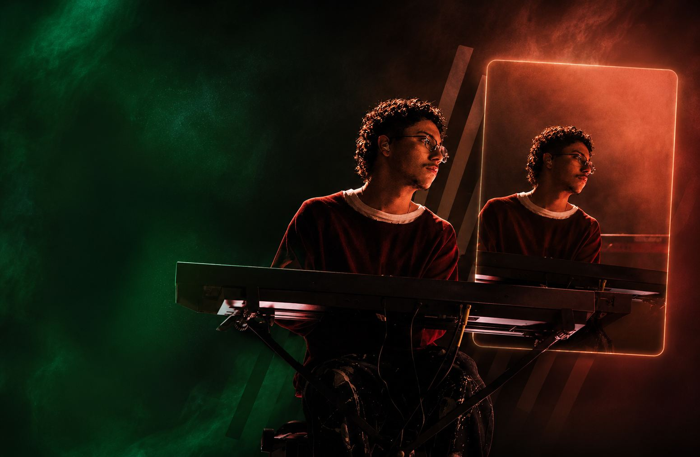

Pentatônica Moderna
Uma nova visão da pentatônica para criar linhas e cores muito além do convencional.


Na hora de sair do padrão, você repete os mesmos licks de sempre. Na hora de explorar o instrumento, bate numa parede invisível.
Se você se identificou com pelo menos um desses pontos, você está exatamente no lugar certo.
O problema não é você. É que ninguém te ensinou o que realmente importa para um tecladista que quer se desenvolver de verdade.
O curso não foi feito para iniciantes aprenderem a tocar. Foi feito para músicos como você — que já têm base — finalmente entenderem o que separa quem "toca direito" de quem faz o instrumento cantar.
Uma nova visão da pentatônica para criar linhas e cores muito além do convencional.
Sobreposição de acordes para gerar novas cores harmônicas com sofisticação.
Voicings abertos que dão amplitude e modernidade ao seu acompanhamento.
A sonoridade quartal aplicada ao jazz, gospel e à música brasileira.
Técnica clássica do piano para modernizar melodias e harmonizar com elegância.
Conduções cromáticas para enriquecer linhas, acordes e melodias.
Reinterprete progressões com substituições criativas e harmonia avançada.
Tensões, voicings híbridos e estruturas simétricas para um som contemporâneo.
Recursos para acompanhar cantores, trios e bandas com personalidade.
Unindo jazz, gospel e MPB em um vocabulário próprio e expressivo.
| Acesso completo ao método de improviso e harmonia | R$497 |
| Acesso por 12 meses — no seu ritmo | R$197 |
| Suporte e atualizações dentro do período | R$97 |
| Valor total | R$791 |
| Seu investimento hoje | R$197 |
Por apenas R$197 — menos do que uma hora com um professor particular — você tem acesso ao método completo de um Latin Grammy Ambassador.
Compre, acesse, assista as primeiras aulas. Se por qualquer motivo você sentir que não é pra você — devolvemos 100% do seu dinheiro. Sem formulários complicados. Sem justificativa. Sem julgamento.
Quem confia no próprio produto oferece garantia. E Murilo confia. O risco é todo nosso. A evolução é toda sua.
// Perguntas frequentes
// Chegou a hora
Os tecladistas que se destacam não têm mais talento que você. Eles têm o mapa certo.
E agora esse mapa está disponível por R$197.
Você pode fechar essa página e continuar do mesmo jeito — repetindo os mesmos acordes, sentindo que poderia ir além mas sem saber como. Ou você pode tomar uma decisão diferente hoje.
Murilo Teixeira foi reconhecido pela Recording Academy como Latin Grammy Ambassador não porque tem talento sobrenatural — mas porque aprendeu os segredos certos, na prática, e passou anos refinando como ensiná-los. Agora ele está te oferecendo o caminho mais curto entre onde você está e onde quer estar no teclado.
R$197 · 7 dias de garantia · 12 meses de acesso